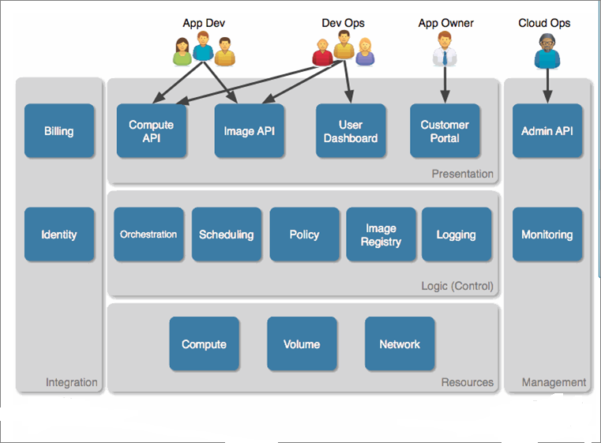
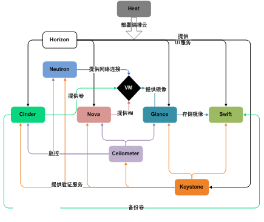

您所不知道容器化OpenStack的10个好处
作者：课课家教育 http://www.kokojia.com点击数：11403发布时间：2017-06-23 16:00:11欢迎大家阅读本篇文章，本篇文章讲述了您所不知道容器化OpenStack的10个好处，文章当中有许多的小细节，所以请大家仔细阅读本篇文章哦~
分享：OpenStack
OpenStack是一个由NASA(美国国家航空航天局)和Rackspace合作研发并发起的，以Apache许可证授权的自由软件和开放源代码项目。
OpenStack是一个开源的云计算管理平台项目，由几个主要的组件组合起来完成具体工作。OpenStack支持几乎所有类型的云环境，项目目标是提供实施简单、可大规模扩展、丰富、标准统一的云计算管理平台。OpenStack通过各种互补的服务提供了基础设施即服务(IaaS)的解决方案，每个服务提供API以进行集成。

OpenStack是一个旨在为公共及私有云的建设与管理提供软件的开源项目。它的社区拥有超过130家企业及1350位开发者，这些机构与个人都将OpenStack作为基础设施即服务(IaaS)资源的通用前端。OpenStack项目的首要任务是简化云的部署过程并为其带来良好的可扩展性。本文希望通过提供必要的指导信息，帮助大家利用OpenStack前端来设置及管理自己的公共云或私有云。
OpenStack云计算平台，帮助服务商和企业内部实现类似于 Amazon EC2 和 S3 的云基础架构服务(Infrastructure as a Service, IaaS)。OpenStack 包含两个主要模块：Nova 和 Swift，前者是 NASA 开发的虚拟服务器部署和业务计算模块;后者是 Rackspace开发的分布式云存储模块，两者可以一起用，也可以分开单独用。OpenStack除了有 Rackspace 和 NASA 的大力支持外，还有包括 Dell、Citrix、 Cisco、 Canonical等重量级公司的贡献和支持，发展速度非常快，有取代另一个业界领先开源云平台 Eucalyptus 的态势。
1、升级：
这个其实大家都可以想到，容器最大的特点，就是升级。企业使用OpenStack，最大的一个顾虑，就是升级。尤其在OpenStack 1年两个版本下，不断的有新的功能的需求的情况下，如果不能升级，其实是很痛苦。尤其在企业的迅速发展的过程中。
容器化的OpenStack，升级有多么简单呢?其实就是删掉容器，换上新的容器，用户基本是无感知的状态下完成。
升级子所以很困难，有一个很现实的原因，线上环境，很难模拟，升级验证测试很难进行。当采用容器化以后，我们很容易模拟出一个线上环境，进行升级测试，升级失败，回滚。其实这些都做的很漂亮。
2、灵活：
以前厂商的解决方案，都是3个控制节点，如果我希望增加到5个控制节点，或者把控制节点某个服务单独部署，那么这个基本是很难完成的任务。
以前厂商都厂商把OpenStack的各个服务放到虚拟机里，这样部署灵活性提高不少。但是虚拟机还是很重，面对客户千百万化的需求，就有点无能为力。
举一个例子
企业基本节点，我规模很小，可能就只有几台机器，这时候，我可能不需要控制节点高可用，我就需要1个控制节点，管理机柜计算节点。
随着时间的发展，希望扩大规模，控制节点变成高可用。
规模进一步扩大，我就需要把消息队列单独出来部署，解决性能的问题。
这种需求，很实在，OpenStack厂商也在努力满足企业的这些需求，其实Mirantis的Fuel，已经在很多程度，满足了企业这种需求，不过代价很大。
对于容器化的OpenStack，就变得很简单，无非就是调整各个节点的容器分布，编排的问题。控制节点是3个，还是五个，RabbitMQ放在什么位置，根本就不是问题。
3、配置管理：
OpenStack过去使用最广的配置管理工具是Puppet，对于企业用户来说，这个是很难掌控的。其实在国内，就算是互联网公司，负责Puppet的运维人员离职，其实都是很难招聘回来相应的人员。
对于OpenStack厂商来说，要想完全掌控Puppet，还是很困难的。更别说，要满足各种灵活的需求。
配置管理工具，其实Salt和Ansible，是Python开发，比较易用，不过在OpenStack的生态圈里，不如Puppet强大，很难超越Puppet。
容器化后的OpenStack，配置管理工具，或者编排的工具，就很多选择，Ansible、Slat、Kubernetes，都是可以支持。你就不需要受Ruby的折磨。
其实这也是大大降低企业掌控OpenStack难度。
4、操作系统厂商依赖：
厂商都在宣传所谓没有厂商绑定。其实你用了红帽的OpenStack，要想换到Ubuntu下，不是不可能，其实肯定很痛苦。如果要换成Suse，难度就更高。
各种配置管理工具，其实都是依赖发行版的包管理。国内的银行其实都使用Suse。但是社区的Puppet工具不支持Suse。或者我希望玩的项目，操作系统发行版没有提供包，怎么办?
容器化的OpenStack。其实理论上，可以跑在任何支持容器的操作系统上。内核的版本高，无非就是性能更好一点。其实你只需要做点测试，就可以实现这种跨操作系统的部署。
容器里，可以使用RPM包，Deb包，也是可以跑源码安装，这样其实对于操作系统厂商来说，基本就没任何的依赖。不受制操作系统厂商。
5、软件依赖：
OpenStack项目的增多，软件互相依赖的问题，越来越严重。因为OpenStack很多项目是需要使用外部项目，例如Ceph，他的依赖很可能和OpenStack组件的依赖产生冲突。
这种问题，可以解决，但是解决，没任何的意义和技术含量，很让技术人员抓狂。其实发行版都在投入大量的精力去解决各个软件包的互相依赖的问题。
容器化的OpenStack，很好的解决了这个问题。
6、部署时间：
在生产环境中，部署时间1个小时，和一天，其实区别不大，毕竟部署是一次性的工作。对于测试来说，就完全不一样。如果我10分钟可以完成一次部署，可以测试验证的东西，和几个小时才能完成一次的部署，差异还是很大的。
容器化OpenStack，大大加快了部署的时间，通常10分钟，就可以完成一次完整功能的部署，验证OpenStack各种新功能的代价，就大大减少。
7、显得简单：
OpenStack在企业的实际使用中，都是抱怨太复杂，这其实也是因为OpenStack，松耦合，功能强大，同时也让用户感觉很复杂。尤其在出现错误的时候，很无奈。
容器化后，用户感觉OpenStack各个组件，就类似累积木一样，搭建起来，可以根据自己的需求，选择哪个模块。感觉自己是可控的。你可以很方便的装上某个模块，不满意，删掉。背后的复杂的逻辑，社区已经帮你完善。
遇到问题，寻求帮助，也显得简单很多。因为大家容器里的东西都是一样的，无非就是外面的配置文件。
也只要让企业感觉自己可以掌控OpenStack，这样OpenStack才会大量的进入企业的IT系统。这个时候，无论是采用外包还是自己运维。
8、计算节点HA：
如果实现计算节点挂掉后，上面的虚拟机自动在别的节点启动起来。这个问题解决的办法，其实有很多，解决的难点，就在于我如何判断这台节点真的挂掉。因为虚拟机的迁移的东西，是很大的，必须很小心。也很容易造成误判。
海云捷迅提出一个使用Consul的解决方案，就是一个容器里做健康检查的组件，放到OpenStack计算节点，类似peer-to-peer，互相检查。
当容器化的OpenStack后，那么就可以利用容器强大社区，各种的实现方式，第一时间知道节点失效。肯定你也是可以使用Consul来解决这个问题，更加直接。
9、监控和日志分析：
OpenStack一直都在完善自己的监控日志分析。不过进展并不太好。容器化的OpenStack，面临的监控，日志的问题，和以前的OpenStack有很大差异。
不过不得不承认，容器的世界里，这方面非常完善，太多选择，可以帮助你解决监控和日志分析的问题。
可以利用强大的Docker社区，来完善OpenStack短板的地方。
10、创新：
容器化后的OpenStack，其实带来很多意想不到的创新和变化。很多以前很炫的概念，慢慢走向现实。
OpenStack一个版本的发行周期大概是分为B1、B2、B3，每个阶段大概45天，后续就发布RC，正式版本。
以往OpenStack公司都是等到一个版本正式发布后，进行打包，测试，验证，经过3个月和半年，正式对外发布。那么这种发布周期，其实已经有点跟不上OpenStack的步伐。例如Mitaka版本发布的时候，红帽的Liberty版本才正式对外发布。
能不能做到，OpenStack一边开发，发行版也在同步进行打包，测试呢?其实在OpenStack发展初期，有人提出这样的建议，不过对操作系统厂商来说，代价太大，不愿意去做。
有了容器化以后，完全不需要依赖操作系统的打包，我可以根据自己的需求，进行build image，测试，这样我的产品的发布周期，就会大大缩短。
总结：

OpenStack上的很多问题，都是可以解决，只是解决起来很费劲，容器化，解决就显得很优雅。有强大的Docker社区，你解决问题的方法，方式就更多。
小结：相信最后大家阅读完毕本篇文章后，学到了不少知识吧？当然如果大家还想要了解更多相关方面的详细内容的话呢，请登录课课家教育平台咨询哟~
- 上一篇：您肯定不知道混合云的应用与重要性
- 下一篇：您知道云计算的三大支柱是什么吗?
最新评论
暂无评论~